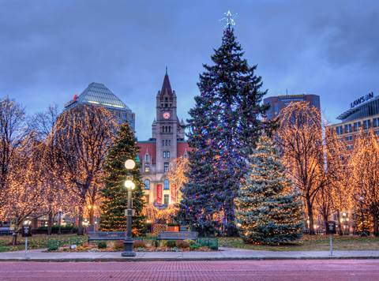

MINNEAPOLIS-ST.PAUL AREA
The Minneapolis-St. Paul area is incredibly diverse. Visitors will find upscale lodging, dining and award-winning theater, all in an area with dozens of parks, trails and green space including the Mississippi National River and Recreation Area, a national park site that boasts 72 miles of public riverfront. From quaint small town celebrations to one of the largest state fairs in the nation, there’s an event to attend every weekend no matter the time of year. Simply delighting in local craft beer or enjoying a savory dish from a local food truck can be cause for celebration. Whether you’re an outdoor enthusiast, a theater-goer or someone who loves to shop ‘til you drop, the metro area has an activity to fit your interests and budget. Learn more about the region’s abundance of cultural attractions, outdoor recreation opportunities and world-class shopping—with no tax on clothing or shoes!